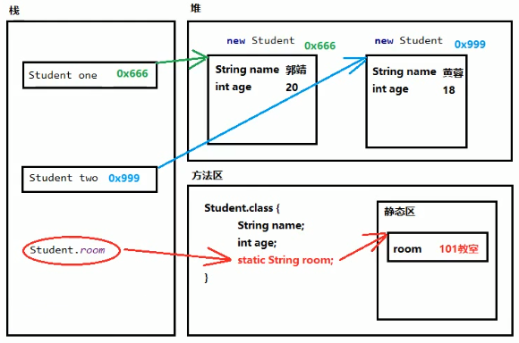
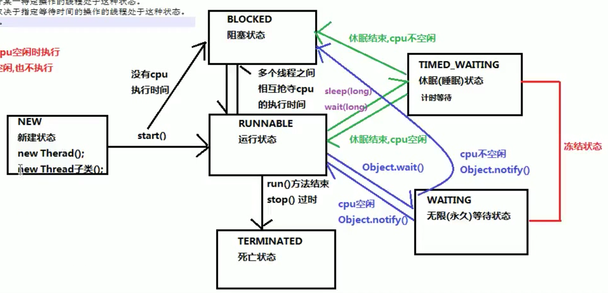

| 快捷键 | 功能 |
|---|---|
| Alt + / | 显示提示 |
| Alt + Enter | 导入包, 自动修正代码 |
| cmd + Alt + L | 格式化代码 |
| cmd + / | 单行注释 |
| cmd + N | 自动添加 Constructor, Getter, Setter |
栈(Stack): 存放的是方法中的局部变量. 方法的运行一定要在栈当中
堆(Heap): 凡是new出来的东西, 都在堆当中
方法区(Method Area): 存放.class相关信息, 包含方法的信息
本地方法栈(Native Method Area): 域操作系统相关
寄存器(pc Register): 与 CPU 相关
(Application Programming Interface) 应用程序编程接口
获取键盘输入
[ 导包要点*: java.lang 包下的内容不需要导包 ] [ 栗子: String 不是 Java 关键字, 但是不需要导包. 其原因是 String 在 java.lang 包内 ]
xxxxxxxxxximport java.util.Scanner; //1. 导包...//System.in 代表从键盘输入Scanner s = new Scanner(System.in); //2. 创建...int num = s.nextInt(); //3. 使用 (获取数字)String str = s.next(); //获取字符串// 如果是 Hello World, 则只会读出 HelloString line = s.nextLine();//获取输入的一整行// 如果是 Hello World, 则会读出 Hello World...没有变量名的对象
xxxxxxxxxx...new Person();...[!] 匿名对象只能使用唯一的一次
Scanner 的匿名对象使用方式
xxxxxxxxxx...int a;a = new Scanner(System.in).nextInt();...产生随机数
xxxxxxxxxx...import java.util.Random;...Random r = new Random();...int a = r.nextInt(); // 生成int所有范围int b = r.nextInt(47); // 生成在 [0, 47) 这个区间内的一个随机整数...xxxxxxxxxximport java.util.ArrayList; //导包...ArrayList<Integer> list = new ArrayList<>(); //创建...list.add(7); //在最后添加元素7list.get(0); //获取索引为0的元素list.remove(0); //移除索引为0的元素list.size(); //获取长度...常用方法的注意事项:
xxxxxxxxxxpublic boolean add(E element); //添加元素, 如果添加成功则返回 truepublic E remove(int index); //删除索引为 index 的元素, 并返回呗删除的元素java.lang.String 类代表字符串
特点:
文档:
"Java 程序中的左右字符串字面值 (如 "abc" ) 都作为此类的实例实现"
这句话的意思是说, 程序中所有的双引号字符串, 都是 String 类的对象
常见创建方法 (3+1):
xxxxxxxxxxpublic String(); //创建空白字符串public String(char[] array); //由字符数组创建public String(byte[] array); //由字节数组创建String s = "asd"; //直接创建...String str1 = new String();char[] charArray = { 'a', 'b', 'c' };String str2 = new String(charArray);byte[] byteArray = { 97, 98, 99 };String str3 = new String(byteArray);String str4 = "abc";字符串常量池 程序当中直接写上的双引号字符串, 就在字符串常量池中.
xxxxxxxxxxString str1 = "abc";String str2 = "abc";System.out.println(str1==str2); //true字符串的内容比较
xxxxxxxxxxpublic boolean equals(Object obj);equals () 方法具有 对称性
推荐
xxxxxxxxxx"...".equals(someStr);, 而不是
xxxxxxxxxxsomeStr.equals("...");原因: 后者有 NullPointerException 的风险
xxxxxxxxxxpublic boolean equalsIgnoreCase(String str);常见获取相关方法
xxxxxxxxxxpublic int length(); //获取字符串长度public String concat(String str); //将当前字符串和参数字符串拼接成为返回值新的字符串public char charAt(int index) //查找制定索引位置的单个字符public int indexOf(String str); //查找参数字符串在本字符串当中首次出现的索引位置, 如果没有就返回-1截取字符串
xxxxxxxxxxpublic String subString(int index); //从参数位置一直到字符串末尾public String subString(int begin, int end); //从begin开始, 一直到end结束, 中间的字符串 [begin, end)字符串转换方法
xxxxxxxxxxpublic char[] toCharArray(); //将当前字符串拆分成为字符数组作为返回值public byte[] getBytes(); //获得当前字符串底层的字节数组public String replace(CharSequence oldString, CharSequence newString); //将原字符串中的oldString替换为newString并返回结果字符串分割
xxxxxxxxxxpublic String[] split(String Regex); //按照参数的规则, 将字符串切分成为若干部分 如果要用"."进行分割, 则必须输入"\\."
一旦使用了 static 关键字, 那么这样的内容将不再属于对象自己, 而是属于类. 所以凡是本类的对象, 都共享这一份.
static 内存图 假设有 Student 类如下:
xxxxxxxxxxpublic class Student { String name; int age; static String class; public Student(String name, int age) { this.name = name; this.age = age; } public static void main(String[] args) { Student one = new Student("郭靖", 20); Student two = new Student("黄蓉", 18); Student.room = "101教室"; System.out.println(Student.room); }}
静态代码块
xxxxxxxxxxpublic class SomeClass { static { ... //静态代码块的内容 }}特点: 当第一次用到本类时, 静态代码块执行的惟一的一次.
! 静态内容总是优先于非静态, 所以静态代码块比构造方法先执行.
静态代码块的典型用途:
java.util 包中.xxxxxxxxxxpublic static String toString(数组类型); //将参数数组转成字符串后返回.public static void sort(数组类型); //按升序(默认)对数组内的元素进行排序.//如果是数值, 默认按照从小到大//如果是字母, 默认按字母先后顺序排序//如果是自定义类型, 则这个类型需要有Comparable或者Comparator接口的支持其中的一些方法:
xxxxxxxxxxpublic static double abs(double num);public static double ceil(double num);public static double floor(double num);public static long round(double num);继承是多态的前提, 如果没有继承, 就没有多态. 继承主要解决的问题: 共性抽取. 继承的特点:
xxxxxxxxxxclass Animal { void eat() { System.out.println("Animal is eating."); }}class Dog extends Animal { //... public static void main(String[] args) { Dog dog = new Dog(); dog.eat(); }}[重要]成员变量访问注意事项:
通过子类对象访问成员变量:
xxxxxxxxxxclass Animal {}class Dog extends Animal { int age=100; public static void main(String[] args) { Animal dog = new Dog(); System.out.println(dog.age); //此行会报错 }}简介通过成员方法访问成员变量:
⚠️ 无论是成员变量还是成员方法, 一定是向上找父类, 绝对不会向下找子类.
段正淳不知道自己的孩子有哪些.
[重要]成员方法的访问规则:
概念: 在继承关系当中, 方法名称一样, 参数列表也是一样. 特点: 如果创建的是子类对象, 那么优先使用子类对象. 注意事项:
名称相同, 参数列表也相同.
使用注解 @Override: 写在方法前面, 判断是否有效地正确覆盖重写.
子类方法的返回值必须小于等于父类的返回值范围.
子类方法的权限必须大于等于父类方法权限.
public protected (default) private[设计原则] 对于已经投入使用的类, 尽量不要进行修改. 推荐定义一个新的类, 来重复利用其中共性内容, 并且添加改动新内容.
super()调用, 所以一定是先调用父类构造方法.super关键字来调用父类重载函数.super的父类构造调用, 必须是子类构造方法的第一个语句, 不能一个子类构造调用多次super构造.[总结] 子类必须调用父类构造方法, 如果父类没有含参构造函数, 则在子类里调用super(默认调用); 如果父类没有含参构造函数, 则在子类里调用想要的父类构造函数; super(...)只能有一个且在方法的第一行.
xxxxxxxxxxabstract class Animal { Animal() { System.out.println("Animal constractor."); } abstract void eat();}public class Dog extends Animal { Dog() { System.out.println("Dog constructor."); } void eat() { System.out.println("Dog eats."); } public static void main(String[] args) { Dog dog = new Dog(); }}结果
xxxxxxxxxxAnimal constractor.Dog constructor.有参构造函数:
xxxxxxxxxxabstract class Animal { Animal(String category) { System.out.println(category+" Animal constractor."); } abstract void eat();}public class Dog extends Animal { Dog() { super("Mammal"); System.out.println("Dog constructor."); } void eat() { System.out.println("Dog eats."); } public static void main(String[] args) { Dog dog = new Dog(); }}结果:
xxxxxxxxxxMammal Animal constractor.Dog constructor.default解决了接口升级的问题.
举个栗子:
xxxxxxxxxxpublic interface A { public abstract void method1();}xxxxxxxxxxpublic class C implements A { public void method1() { }}现在如果A发生了变化:
xxxxxxxxxxpublic interface A { public abstract void method1(); public abstract void method2();}那么C就必须也要更新:
xxxxxxxxxxpublic class C implements A { public void method1() {} public void method2() {}}如果A被很多个类实现, 那么对A的更改将会导致大量现有的类需要被更新.
Introducing default:
xxxxxxxxxxpublic interface A { public abstract void method1(); public default void method2() {}}这样一来, 不仅A获得了更新, 已经实现了A的现有类也可以不需要做更改 且默认的方法会被实现类继承.
xxxxxxxxxxpublic class C implements A { public void method1() { } public static void main(String[] args) { C c = new C(); c.method2(); }}Java 8以后, 接口可以有静态方法.
xxxxxxxxxxpublic interface A { public abstract void method1(); public static void staticMethod() {} //需要有方法体.}Java 9后
格式:
public static final 数据类型 变量名称 = 数据值;
举个栗子:
xxxxxxxxxxpublic interface A { public static final int num = 10;}A.java
xxxxxxxxxxpublic interface A { public abstract void methodA();}B.java
xxxxxxxxxxpublic interface B { public abstract void methodB();}C.java
xxxxxxxxxxpublic interface C extends A, B {}[注意事项]
举个栗子:
A.java
xxxxxxxxxxpublic interface A { public default void method() {}}B.java
xxxxxxxxxxpublic interface B { public default void method() {}}C.java
xxxxxxxxxxpublic interface C extends A, B { public default void method() {}}为什么要用多态?
instanceof()如何才能知道一个父类引用的对象, 本来是什么子类.
举个栗子🌰:
Animal.java
xxxxxxxxxxpublic interface Animal { public abstract void eat();}Dog.java
xxxxxxxxxxpublic class Dog implements Animal { public void eat() { System.out.println("Dog is eating"); } public void watchHouse() { System.out.println("Dog is watching house."); }}Cat.java
xxxxxxxxxxpublic class Cat implements Animal { public void eat() { System.out.println("Cat is eating."); } public void catchMouse() { System.out.println("Cat catches a mouse."); }}Main.java
xxxxxxxxxxpublic class Main { public static void main(String[] args) { Animal animal = new Dog(); animal.eat(); if (animal instanceof Dog) { Dog dog = (Dog) animal; dog.watchHouse(); } if (animal instanceof Cat) { Cat cat = (Cat) animal; cat.catchMouse(); } }}[结果]:
xxxxxxxxxxDog is eatingDog is watching house.
final可以用来修饰一个:
被修饰的类不可以再被继承. (不能拥有子类)
被修饰的方法是最终方法. (不能被覆盖重写)
[注意事项] 对于类, 方法来说, abstract关键字和final关键字不能同时使用, 因为两者矛盾.
xxxxxxxxxxfianl int a;a = 2;如果使用final, 必须手动赋值.
xxxxxxxxxxpublic class A { public final int num = 0;}或者在构造器中赋值
xxxxxxxxxxpublic class A { public final int num; public A(int num) { this.num = num; }}xxxxxxxxxx[修饰符] class Outer { [修饰符] class Inner { ... } ...}main中只调用外部类的方法.xxxxxxxxxx外部内名.内部类名 变量名 = 外部类对象.new 内部类名(); 举个栗子🌰:
xxxxxxxxxxpublic class Outer { public class Inner { public void innerCall() { System.out.println(name); } } private String name; public Outer(String name) { this.name = name; } public static void main(String[] args) { Outer outter = new Outer("Hello"); outer.new Inner().innerCall(); }}xxxxxxxxxx外部类名.this.变量名;xxxxxxxxxxclass Outer { void outerMethod() { class 局部内部类名 { ... } }}[注意事项] 定义一个类的时候, 权限修饰符的规则:
final和局部内部类局部内部类中, 如果希望访问所在方法的局部变量, 那么这个局部变量必须是"有效的final"
MyInterface.java
xxxxxxxxxxpublic interface MyInterface { void method();}MyInterfaceImpl.java
xxxxxxxxxxpublic class MyInterfaceImpl implements MyInterface { void method() { System.out.println("实现类覆盖重写了方法."); }}Main.java
xxxxxxxxxxpublic class Main { public static void main(String[] args) { MyInterfaceImple impl = new MyInterfaceImpl(); impl.method(); }}如果接口的实现类(或者是父类的子类)只需要使用唯一的一次, 那么这种情况下就可以省略掉该类的定义, 而改为使用匿名内部类.
格式:
xxxxxxxxxx接口名 对象名 = new 接口名称() { //覆盖重写方法. ...}还是上面的栗子🌰:
xxxxxxxxxxpublic interface MyInterface { void method();}Main.java
xxxxxxxxxxpublic class Main { public static void main(String[] args) { MyInterface impl = new MyInterface() { void method() { System.out.println("实现类覆盖重写了方法."); } } }}xxxxxxxxxxclass Main { public static void main(String[] args) { String a = null; String b = "asd"; Objects.equals(a, b); //不会报错. }}毫秒值: 秒
xxxxxxxxxxlong getTime(); //把日期转换为毫秒值xxxxxxxxxxString format(Date date); //按照指定格式, Date日期转换为相应的字符串.xxxxxxxxxxDate parse(String string) throws ParseException;用SimpleDateFormat类
xxxxxxxxxxSimpleDateFormat(String pattern); //需要指定的模式| 符号(区分大小写) | 表示 |
|---|---|
| y | 年 |
| M | 月 |
| d | 日 |
| H | 时 |
| m | 分 |
| s | 秒 |
栗子🌰:
xxxxxxxxxxSimpleDateFormat dateFormat = new SimpleDateFormat("yyyy-MM-dd HH:mm:ss");[使用方法]
xxxxxxxxxxCalendar calendar = Calendar.getInstance();
xxxxxxxxxxpublic int get(int field); //返回给定日历字段的值public void set(int field, int value); //将给定日历字段设置为给定值public abstract void add(int field, int amount); //根据日历的规则, 为给定日历字段添加或者减去指定的时间量public Date getTime(); //返回一个表示此Calender时间值(从历元到现在的毫秒偏移量)的Date对象常用方法
xxxxxxxxxxpublic static long currentTimeMills(); //返回以毫秒为单位的当前时间.public static void arraycopy(Object src, int srcPos, Object dest, int destPos, int length); //将数组中指定的数据拷贝到另一个数组中.//参数:/*src 源数组srcPos 源数组的起始位置dest 目标数组destPos 目标数组起始位置length 要复制的数组元素的数量*/
字符串缓冲区, 可以提高字符串的操作效率.
xxxxxxxxxxStringBuilder(); //构造一个不带任何字符的字符串生成器, 其初始容量为16个字符.StringBuilder(String str); xxxxxxxxxxStringBuilder stringBuilder = new StringBuildappend("!");stringBuilder.append(" World");stringBuilder.append("!"); // 等同于 stringBuilder.append(" World").append("!");print(stringBuilder.toString());结果
xxxxxxxxxxHello World!
xxxxxxxxxxint num = 1;Integer numInt = new Integer(num); //方法已过时Integer numInt = new Integer("2"); //方法已过时Integer numInt = Integer.valueOf(1); numInt = Integer.valueOf("1");num = numInt.intValue();
xxxxxxxxxxpublic boolean add(E e);public void clear();public boolean remove();public contains(E e);public boolean isEmpty();public int size();public Object[] toArray();xxxxxxxxxxpublic E next();public boolean hasNext();
xxxxxxxxxxclass MyClass <E> { private E e; ...}xxxxxxxxxxpublic <M> void method(M m) {...} //普通方法public static <M> methodStatic(M m) {...} //静态方法xxxxxxxxxxinterface GenericInterface<E> {...}只能作为方法的参数使用.
MyClass.java
xxxxxxxxxxclass MyClass<E> { E e; MyClass(E e) { this.e = e; } void print() { System.out.println(e); }}Main.java
xxxxxxxxxxclass Main { static void print(MyClass<?> myclass) { //可以接受各种类型的 MyClass 对象 myclass.print(); } public static void main(String[] args) { MyClass<String> myClass = new MyClass<>("asd"); MyClass<Integer> myClass1 = new MyClass<>(1); print(myClass); print(myClass1); }}结果
xxxxxxxxxxasd5
[约束]
xxxxxxxxxxpublic static <T> boolean addAll(Collection<T> c, T... elements);public static void shuffle(List<?> list);public static <T> void sort(List<T> list); //T类需要实现Comparable接口public static <T> void sort(List<T> list, Comparator<? super T> c);Person.java
xxxxxxxxxxpublic class Person implements Comparable<Person> { private String name; private int age; public Person(String name, int age) { this.name = name; this.age = age; } public Person() {} public String getName() { return name; } public void setName(String name) { this.name = name; } public int getAge() { return age; } public void setAge(int age) { this.age = age; } public String toString() { return "Person{" + "name='" + name + '\'' + ", age=" + age + '}'; } public int compareTo(Person o) { int compareName = getName().compareTo(o.getName()); if (compareName!=0) { return compareName; } else { return getAge()-o.getAge(); } }}main()
xxxxxxxxxxComparator<Person> comparator = new Comparator<Person>() { public int compare(Person o1, Person o2) { int compareName = o1.getName().compareTo(o2.getName()); if (compareName!=0) { return compareName; } else { return o1.getAge()-o2.getAge(); } }};ArrayList<Person> arrayList = new ArrayList<>();Collections.addAll(arrayList, new Person("darin", 23), new Person("jack", 21), new Person("tom", 25));Collections.sort(arrayList);Collections.sort(arrayList, comparator);
xxxxxxxxxx<E> void method(E e)) {}xxxxxxxxxxclass Cup<E> { E e; Cup(E e) { this.e = e; } void pour() { System.out.println(e); }}xxxxxxxxxxvoid method(Cup<?> cup) { cup.pour();}public static void main(String[] args) { Cup<Integer> cup1 = new Cup<>(1); Cup<String> cup2 = new Cup<>("water"); method(cup1); method(cup2);}xxxxxxxxxx1water
理解: 一个方法可以处理一个支持泛型的类. 如果没有通配符, 则每出现一个包含新类的支持泛型类出现, 都需要重新写方法.
Print.java
xxxxxxxxxxpublic class Print { public static void print(Object... objs) { for (Obj obj: objs) { System.out.print(obj); System.out.print(" "); } System.out.println(); }}
在 java.utils 包中
xxxxxxxxxxpublic static <T> boolean addAll(Collection<T> c, T... elements);public static void shuffle(List<?> list);public static <T> void sort(List<T> list); //T 需要实现 Comparable 接口public static <T> void sort(List<T> list, Comparator<? super T> comparator);
底层是HashTable, 单个节点冲突的数量超过8就会转换成红黑树, 否则为链表.
containsKey()方法检查键是否存在.
[注意事项] 在使用remove()方法的时候要用包装类, 否则会有NullPointerException的风险.
Set<T> keySet() 方法获得包含有所有键的集合, 然后使用迭代器或者增强for循环来遍历.Entry 来遍历(见 Map.Entry接口).作用:
当Map集合已创建, 那么就会在Map集合中创建一个Entry对象, 用来记录键与值.
用来遍历
Set<Map.Entry<K, V>> entrySet()方法来获取Set对象, 然后使用迭代器或者增强for循环来遍历.Entry有getKey()和getValue()方法可以用来获取数据.xxxxxxxxxxHashMap<Integer, Integer> map = new HashMap<>();map.put(1, 2);map.put(2, 3);map.put(3, 4);Set<Map.Entry<Integer, Integer>> set = map.entrySet();for (Map.Entry<Integer, Integer> entry: set) { print(entry.getKey(), entry.getValue());}有序存储
Lsit, Set, Map 接口一次性添加多个元素.Set和Map接口在调用of()方法的时候不能有重复的元素, (否则会跑出异常).xxxxxxxxxxList<Integer> list = List.of(1,2,4,5,6,7);
程序出现异常, JVM 会做的事:
return 和 finallyfinally 中有 return 语句, 永远返回 finally 中的结果, 应该避免该情况.xxxxxxxxxxclass A { public static int method(int i) { try { if (i == 1) throw new Exception("I made it up."); return 3; } catch (Exception e) { System.out.println("In catch"); return 2; } finally { System.out.println("In finally, before return 0"); return 0; } } public static void main(String[] args) { int r = method(2); System.out.println(r); }}结果
xxxxxxxxxxIn finally, before return 00
如果 i=1
xxxxxxxxxxIn catchIn finally, before return 00
xxxxxxxxxxclass Father { public void method01() throws NullPointerException, ClassCastException {} public void method02() throws IndexOutOfBoundsException {} public void method03() throws Exception {} public void method04() {}}class Child extends Father { // 子类重写父类方法时, 抛出和父类相同的异常 public void method01() throws NullPointerException, ClassCastException {} // 子类重写父类方法时, 抛出父类异常的子类 public void method02() throws ArrayIndexOutOfBoundsException {} // 子类重写父类方法时, 不抛出异常 public void method03() {} // 若父类没有抛出异常, 则子类也不能抛出异常 //public void method04() throws Exception {} //错误写法}
如何定义
java.lang.Exceptionxxxxxxxxxxpublic class MyException extends Exception { public MyException() {} public MyException(String s) { super(s); }}java.lang.RuntimeExceptionxxxxxxxxxxpublic class MyRuntimeException extends RuntimeException { ... // 同上}
分时调度
抢占式调度
有限让优先级高的线程使用CPU
main() 方法Thread类的子类并重写 run 方法. Runnable 接口的类, 然后实现 run 方法start 方法启动)xxxxxxxxxxpublic class MyThread extends Thread { private String name; public MyThread(String name) { this.name = name; } public void run(){ // 重写 run() 方法 for (int i=0; i<5; i++) { System.out.println(this.name+" prints "+i); } } public static void main(String[] args) { MyThread myThread1 = new MyThread("Thread 1"); // 创建子类对象 MyThread myThread2 = new MyThread("Thread 2"); // 创建子类对象 myThread1.start(); myThread2.start(); }}结果
xxxxxxxxxxThread 2 prints 0Thread 2 prints 1Thread 1 prints 0Thread 2 prints 2Thread 2 prints 3Thread 1 prints 1Thread 2 prints 4Thread 1 prints 2Thread 1 prints 3Thread 1 prints 4
[!注意事项]
多次启动一个线程是非法的. 特别是当前线程结束执行后, 不能重新启动.
常用方法✨
xxxxxxxxxxpublic void start(); // 如上面演示String getName(); //返回该线程的名称 [后面有演示]static Thread currentThread(); //获取当前线程对象 [后面有演示]void setName(String name); //设置线程名称static void sleep(long millis); //暂停 [!会抛出异常]于是之前的代码可以这样写
xxxxxxxxxxpublic class MyThread extends Thread { public void run(){ for (int i=0; i<5; i++) { System.out.println(this.getName()+" prints "+i); } } public static void main(String[] args) { MyThread myThread1 = new MyThread(); MyThread myThread2 = new MyThread(); myThread1.start(); myThread2.start(); }}结果
xxxxxxxxxxThread-0 prints 0Thread-1 prints 0Thread-0 prints 1Thread-1 prints 1Thread-0 prints 2Thread-1 prints 2Thread-0 prints 3Thread-1 prints 3Thread-0 prints 4Thread-1 prints 4
使用 currentThread() 方法
xxxxxxxxxxpublic class MyThread extends Thread { public void run(){ System.out.println(Thread.currentThread()); } public static void main(String[] args) { MyThread myThread1 = new MyThread(); MyThread myThread2 = new MyThread(); myThread1.start(); myThread2.start(); System.out.println(Thread.currentThread()); }}结果
xxxxxxxxxxThread[Thread-0,5,main]Thread[Thread-1,5,main]Thread[main,5,main]
Runnable 接口并创建对象 .Thread 类的构造器创建 Thread 对象 , 然后调用 的start() 方法.xxxxxxxxxxpublic class MyRunnable implements Runnable { public void run() { for (int i=0; i<=2; i++) System.out.println(Thread.currentThread().getName()+" prints "+i); } public static void main(String[] args) { Thread thread = new Thread(new MyRunnable()); thread.start(); for (int i=0; i<=2; i++) System.out.println(Thread.currentThread().getName()+" prints "+i); }}结果
xxxxxxxxxxThread-0 prints 0main prints 0Thread-0 prints 1main prints 1Thread-0 prints 2main prints 2
好处
避免了单继承的局限性.
降低了程序的耦合性.
Runnable )和开启线程( Thread )进行了分离xxxxxxxxxxpublic class AnonymousRunnable { public static void main(String[] args) { new Thread(new Runnable() { public void run() { System.out.println("It works."); } }).start(); }}结果
xxxxxxxxxxIt works.
卖票的栗子🌰:
xxxxxxxxxxpublic class TicketSeller implements Runnable { private int tickets = 100; public void run() { while (tickets>0) { System.out.println(Thread.currentThread().getName()+" is selling ticket "+tickets); tickets--; } } public static void main(String[] args) { TicketSeller ticketSeller = new TicketSeller(); Thread thread1 = new Thread(ticketSeller); Thread thread2 = new Thread(ticketSeller); Thread thread3 = new Thread(ticketSeller); thread1.start(); thread2.start(); thread3.start(); }}结果
xxxxxxxxxxThread-1 is selling ticket 100Thread-2 is selling ticket 100Thread-0 is selling ticket 100Thread-2 is selling ticket 98Thread-1 is selling ticket 99Thread-2 is selling ticket 96Thread-0 is selling ticket 97Thread-2 is selling ticket 94...
可以看到三个线程在卖同一张票.
解决方法: 同步 synchronized
方式
xxxxxxxxxxsynchronized(锁对象) { ... // 需要同步的代码.}锁对象
可以是任意的对象
保证多个线程的锁对象是同一个
锁对象的作用:
同一个栗子🌰:
xxxxxxxxxxpublic class TicketSeller implements Runnable { private int tickets = 100; private Object lock = new Object(); //创建锁对象 public void run() { synchronized(lock) { //同步代码块 while (tickets>0) { System.out.println(Thread.currentThread().getName()+" is selling ticket "+tickets); tickets--; } } } public static void main(String[] args) { TicketSeller ticketSeller = new TicketSeller(); Thread thread1 = new Thread(ticketSeller); Thread thread2 = new Thread(ticketSeller); Thread thread3 = new Thread(ticketSeller); thread1.start(); thread2.start(); thread3.start(); }}结果
xxxxxxxxxxThread-0 is selling ticket 100Thread-0 is selling ticket 99Thread-0 is selling ticket 98...Thread-0 is selling ticket 3Thread-0 is selling ticket 2Thread-0 is selling ticket 1
xxxxxxxxxx[修饰符] synchronized 返回类型 方法名(参数列表) {}xxxxxxxxxxpublic class TicketSeller implements Runnable { private int tickets = 100; public synchronized void run() { //同步方法 while (tickets>0) { System.out.println(Thread.currentThread().getName()+" is selling ticket "+tickets); tickets--; } } public static void main(String[] args) { TicketSeller ticketSeller = new TicketSeller(); Thread thread1 = new Thread(ticketSeller); Thread thread2 = new Thread(ticketSeller); Thread thread3 = new Thread(ticketSeller); thread1.start(); thread2.start(); thread3.start(); }}结果同上
静态同步方法的锁对象: 本类的 class 属性.
java.util.concurrent.locks.Lock 接口
xxxxxxxxxxpublic void lock(); //加锁public void unlck(); //释放锁java.util.concurrent.locks.ReentrantLock 类
使用步骤
ReentrantLock 对象lock() 方法unlock() 方法同一个栗子🌰:
xxxxxxxxxximport java.util.concurrent.locks.Lock;import java.util.concurrent.locks.ReentrantLock;public class TicketSeller implements Runnable { private int tickets = 100; private Lock lock = new ReentrantLock(); public void run() { lock.lock(); //加锁 while (tickets>0) { System.out.println(Thread.currentThread().getName()+" is selling ticket "+tickets); tickets--; } lock.unlock(); //解锁 } public static void main(String[] args) { TicketSeller ticketSeller = new TicketSeller(); Thread thread1 = new Thread(ticketSeller); Thread thread2 = new Thread(ticketSeller); Thread thread3 = new Thread(ticketSeller); thread1.start(); thread2.start(); thread3.start(); }}
| 线程状态 | 导致状态发生的条 |
|---|---|
| NEW | 线程刚刚被创建 |
| RUNNABLE | 线程可以在 java 虚拟机中运行 (可能在运行自己的代码, 取决于操作系统处理器) |
| BLOCKED | 阻塞状态(锁被其他线程占有); 当获取到锁时, 转换为 Runnable 状态 |
| WAITING | 无限等待, 只能被其他线程唤醒 |
| TIMED_WAITING | 由一些方法触发, 同Waiting, 但是时间到了会被唤醒 |
| TERMINATED | 已退出该线程 |

唤醒栗子🌰:
xxxxxxxxxxpublic class Waiting { public static void main(String[] args) { Object baozi = new Object(); new Thread() { public void run() { synchronized(baozi) { System.out.println("顾客: 我要包子..."); try { baozi.wait(); } catch (InterruptedException e) { e.printStackTrace(); } System.out.println("顾客: 包子真好吃..."); } } }.start(); new Thread() { public void run() { System.out.println("老板: 开始做包子...需要五秒钟..."); try { for (int i=0; i<5; i++) { System.out.println(5-i); Thread.sleep(1000); } } catch (InterruptedException e) { e.printStackTrace(); } synchronized(baozi) { System.out.println("老板: 包子做好了..."); baozi.notify(); } } }.start(); }}结果
xxxxxxxxxx顾客: 我要包子...老板: 开始做包子...需要五秒钟...54321老板: 包子做好了...顾客: 包子真好吃...
死循环版本
xxxxxxxxxxpublic class Waiting { public static void main(String[] args) { Object baozi = new Object(); Thread consumer = new Thread() { public void run() { while (true) { System.out.println("顾客: 我要包子!"); synchronized(baozi) { try { baozi.wait(); } catch (InterruptedException e) { e.printStackTrace(); } System.out.println("顾客: 包子不错!\n=========="); } } } }; Thread provider = new Thread() { public void run() { while (true) { try { Thread.sleep(500); } catch (InterruptedException e) { e.printStackTrace(); } System.out.println("老板: 开始做包子, 需要五秒钟"); synchronized(baozi) { for (int i=0; i<5; i++) { try { System.out.println(5-i); Thread.sleep(1000); } catch (InterruptedException e) { e.printStackTrace(); } } System.out.println("老板: 包子做好了."); baozi.notify(); try { Thread.sleep(500); } catch (InterruptedException e) { e.printStackTrace(); } } } } }; consumer.start(); provider.start(); }}结果
xxxxxxxxxx顾客: 我要包子!老板: 开始做包子, 需要五秒钟54321老板: 包子做好了.顾客: 包子不错!==========顾客: 我要包子!老板: 开始做包子, 需要五秒钟543...
p318